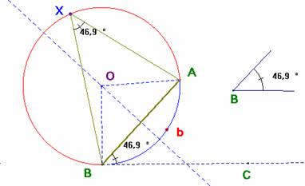
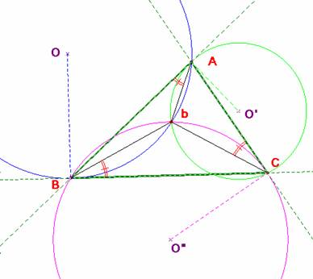
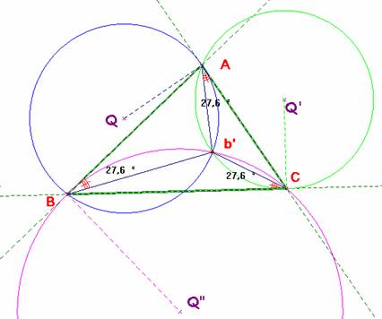

Para el aula
Problema 316.-
Estas tres circunferencias son secantes en un punto b llamado primer punto de Brocard del triángulo.
La circunferencia que pasa por A y B puede ser tangente a (AC) además de a (BC):
Estas tres circunferencias son secantes en un punto b’ llamado segundo punto de Brocard del triángulo.
http://serge.mehl.free.fr/chrono/Brocard.html
Solución de Saturnino Campo Ruiz, profesor del IES Fray Luis de León, de Salamanca .-

Para construir el arco capaz de AB y amplitud el ángulo B, se toma una circunferencia tangente a la semirrecta BC, y que pase por A y B. Esta semirrecta se toma de modo que áng(ABC) sea igual al ángulo B dado. En el triángulo isósceles OBA los ángulos iguales miden el complementario de B y por ello, el ángulo en O igual al doble de B. El arco AXB es el arco capaz de AB y amplitud B.
El arco AbB es el arco capaz de AB y amplitud el suplementario de B.
Primer punto de Brocard.
Sea b el punto de intersección de las circunferencias de centros O y O’. Según se ha explicado en la construcción del arco capaz, el punto b está en el arco capaz de AB y amplitud 180-B y en el arco capaz de AC y amplitud 180-A. La suma de los ángulos BbA y AbC es 360 –(A+B) y, por tanto, el ángulo BbC es de amplitud A+B = 180 – C, que nos indica que b también pertenece al arco capaz de BC y amplitud 180–C. Por tanto las tres circunferencias concurren en el punto b como se pretendía demostrar.

Se tiene además, esta curiosa propiedad: el ángulo bCA inscrito en la circunferencia O’ y el ángulo BAb semiinscrito en la misma circunferencia son iguales por abarcar el mismo arco. Y éste último, por igual razón, es igual al ángulo bBC dentro de la circunferencia O.
Segundo punto de Brocard.

Un razonamiento idéntico al empleado en el primer punto de Brocard sirve ahora para demostrar su existencia, o sea, la concurrencia de las circunferencias de centros Q, Q’ y Q”. E igualmente, se demuestra también la igualdad de los ángulos ABb’, b’AC y b’CB.